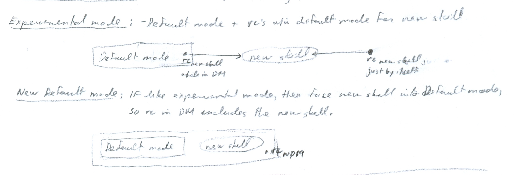

ch9 Summary
POINT FORM SUMMARY
SETTING NEW PERFORMANCE STANDARDS
Figure 9-5a, 9-5b “Modes of Sport Performance” recaps working definitions that are needed to create a new standard.
Operational definitions
- Default mode (Natural Style): current abilities.
- Consists of 3 types of modes. Reactive, Proactive, Panic (Rescue) Response
-
- Reactive mode:
- automatically reacting to course/plays/feel under feet etc
- the situation in environment is retrieval cue for skills
- Proactive mode:
- going through script
- retrieval cues are determined yourself -what they are and their timing
- Panic (Rescue) response:
- pre-rehearsed responses that kick in when things go wrong
- specifically -WSHL (when shit happens list) is pre-rehearsed retrieval cues and movement sequences triggered by problems that commonly occur in specific sport.
- Previous Default Mode (Previous Natural Style):
- old abilities, including retrieval cues for those abilities
- Experimental Mode (Perceived Natural Style):
- Default mode + retrieval cues within default mode for new skill
- New Default Mode (New Natural Style):
- If like Experimental mode, then fuse new skill into Default mode, so retrieval cue in Default Mode includes new skill.
abbreviations
DM - default mode
RM - reactive mode
PM - proactive mode
PR - panic response (WSHL - when shit happens list)
PDM - previous default mode
EM - experimental mode
NDM - new default mode
rc - retrieval cue
Figure 9-5a: Modes of Performance
Figure 9-5b: Modes of Performance

[end of chapter 9 point form summary]
SDCM home
|